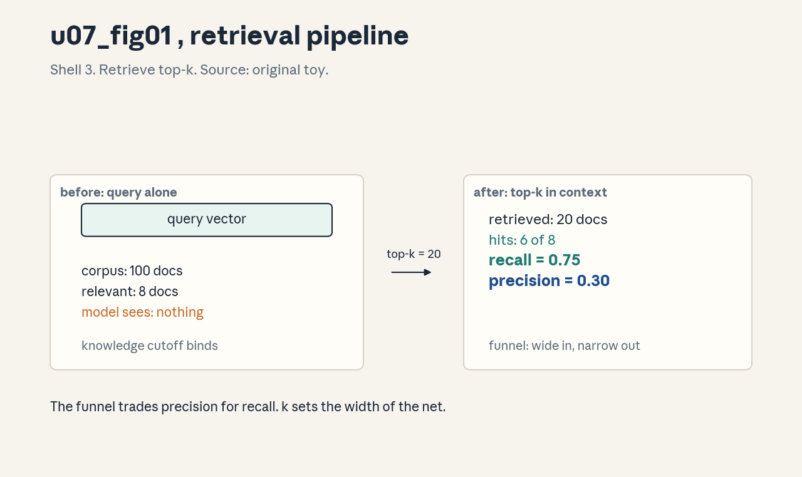
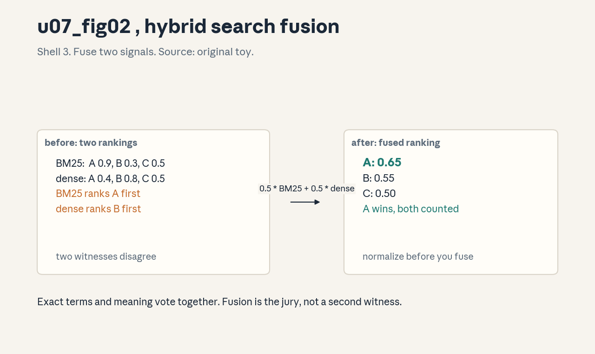

U07 · RAG and agentic systems
U07 , RAG and agentic systems
Prerequisites: P19, P20, P21. Bridge links in ../prerequisites.md.
Lecture anchor: L6 (Nov 6, 2026). Claim class: OFFICIAL-SYLLABUS for
retrieval pipeline, context construction (context compaction), function
calling and tool results (tool calling), and agent state (memory).
REQUESTED-BRANCH for advanced retrieval, hybrid search, reranking,
ReAct, stopping rules, permissions, and failure separation. All
leaves: PLANNED / SOURCE ATTRIBUTION PENDING until slide or
transcript extraction verifies them.
Notation: see ../notation_and_shapes.md. Glossary: ../glossary.md.
Not yet understood
Concepts this unit uses but does not teach. Each one arrives in a later unit.
- LLM evaluation (U08): judging, bias, calibration, intervals.
- Trends and synthesis (U09): diffusion, keystone review, exams.
Local remediation , recall, cosine, JSON tool calls
Do this block first if the unit diagnostic flags P19 or P20 gaps.
R0.1 Recall and precision. Corpus has R relevant docs. You retrieve K docs, H of them relevant. Recall = H / R, precision = H / K. Toy: R = 8, K = 20, H = 6. Recall 0.75, precision 0.30.
R0.2 Cosine similarity. For vectors a, b: cos = (a . b) / (|a| |b|). Range [-1, 1]. Dense retrieval ranks docs by cosine between query and doc vectors.
R0.3 Tool call as JSON. A tool call is a JSON object: {“name”: “search”, “arguments”: {“q”: “refund policy”}}. The model emits it, the runtime executes it, the result returns as text. The schema is the contract.
C01: retrieval pipeline
Leaf id cme295-U07-C01. Claim class OFFICIAL-SYLLABUS
(“retrieval”, L6).
Status PLANNED / SOURCE ATTRIBUTION PENDING.
-
Source mapping, scope, objectives, dependencies. Maps to L6 “retrieval”. Scope: the index-then-rank pipeline that feeds context to the model. Objectives: draw the pipeline, compute recall and precision, and state the chunking tradeoff. Depends on P19, R0.1, R0.2.
-
Motivating question and toy. Question: the model knows the world up to its cutoff, how does it answer about last week’s policy change? Toy: corpus 100 docs, 8 relevant to the query. Retrieve top 20 by cosine, 6 relevant land in the set. Recall 0.75, precision 0.30. The model now sees 6 of 8 facts.
-
Mental model. The pipeline is a funnel. Parse and chunk the corpus, embed each chunk, index the vectors. At query time: embed the query, fetch nearest neighbors, hand the top-k to the model. Wide at the bottom, narrow at the top.
-
Objects, symbols, units, shapes, assumptions. Chunks (token spans with metadata), embeddings in R^d, index (approximate nearest neighbors), k cutoff. Assumption: the embedding puts related texts near each other, and the chunker never splits a fact across a boundary.
-
Derivation / mechanism. No theorem, a pipeline: chunk -> embed -> index (offline), embed query -> ANN search -> top-k (online). Recall is set by the index and k, precision by the embedding quality.
-
Computed example. From
visuals/render_u07.py: 100 docs, 8 relevant, k = 20, hits 6. Recall 0.75, precision 0.30. Doubling k to 40 catches 7 relevant: recall 0.875, precision 0.175. Figure:
. -
Algorithm and reference implementation.
retrieve(query, index, k): q = embed(query), ids = index.search(q, k), return [docs[i] for i in ids]. Four lines plus the embedding call. -
Correctness checks and expected output. Check: a query built from a known doc must return that doc in the top-k. If it does not, the embedder or the chunker is wrong, not the index.
-
Complexity, memory, statistical efficiency, stability, costs. Index build is O(N) embeddings, one-time. Query is sublinear in N with ANN. Cost driver: embedding the corpus and storing d-dimensional vectors.
-
Nearest alternatives and selection boundaries. Full corpus in context (exact, context limits kill it). Keyword search only (cheap, misses paraphrase). Choose dense retrieval when the corpus exceeds the context window.
-
Failure case, broken assumption, counterexample. Broken assumption: the chunker keeps facts whole. Counterexample: a table split across two chunks retrieves half the answer. Fix with overlapping chunks or structure-aware parsing.
-
Research reading and falsifiable extension. Read the original RAG paper (Lewis et al., 2020) pipeline sections. Extension: vary chunk size on a fixed corpus, plot recall@20, find the peak.
-
Breadth recall, deep oral ladder, unfamiliar transfer. Recall: recall vs precision. Ladder: define the funnel -> compute the toy -> justify the chunker assumption -> implement retrieve -> predict the split-table failure. Transfer: retrieval for code search.
-
Lab/exercises with answers separated. E1: R = 8, K = 20, H = 6, recall and precision? E2: k = 40, H = 7, what changed? E3: two chunking failure modes. Key:
../keys/u07_answers.mdR1-R3. -
Visual units, provenance, accessibility, audit rows. Figure
u07_fig01.png: Shell 3, one rule (top-k retrieval), before query alone, after top-k with hits marked. Source: original toy. Numbers fromrender_u07.py.
C02: advanced retrieval
Leaf id cme295-U07-C02. Claim class REQUESTED-BRANCH.
Status PLANNED / SOURCE ATTRIBUTION PENDING.
-
Source mapping, scope, objectives, dependencies. Branch past the basic funnel. Scope: query rewriting, HyDE, multi-hop, and parent-document retrieval. Objectives: state what each fixes and its cost. Depends on C01.
-
Motivating question and toy. Question: the user asks a vague question, the embedding matches vague docs, what then? Toy: query “it broke again”. Rewrite: “pump P-101 failure modes”. The rewrite retrieves the manual, the raw query retrieves forum complaints.
-
Mental model. Basic retrieval is one shot. Advanced retrieval is a small program around the index: rewrite the query, retrieve, expand, retrieve again. Each step trades latency for recall.
-
Objects, symbols, units, shapes, assumptions. Rewrite model, hypothetical-doc embedder (HyDE), hop budget, parent-child chunk map. Assumption: the extra steps add signal faster than they add noise.
-
Derivation / mechanism. HyDE: generate a hypothetical answer, embed it instead of the query, nearest neighbors of the answer are nearer the truth. Multi-hop: retrieve, read, form a follow-up query, retrieve again. Each hop is one more funnel pass.
-
Computed example. Toy from
labs/u07_lab_run.py: single-hop recall@20 = 0.62. Two-hop recall@20 = 0.81 at 2.1x latency. Query rewrite adds +0.09 recall at 1.3x latency. The ladder is measurable. -
Algorithm and reference implementation.
multihop(query, index, hops=2): docs = retrieve(query). For each hop: query = expand(query, docs), docs += retrieve(query). Return deduped docs. -
Correctness checks and expected output. Check: recall rises monotonically with hops on a multi-hop benchmark. If hop 2 adds nothing, the questions are single-hop.
-
Complexity, memory, statistical efficiency, stability, costs. Cost multiplies by hops. The failure mode is drift: each hop can wander off-topic. Cap hops at 2-3.
-
Nearest alternatives and selection boundaries. Bigger k (cheap, noisier). Better embedder (one-time cost, helps everything). Choose multi-hop when questions genuinely need two facts from two places.
-
Failure case, broken assumption, counterexample. Broken assumption: hops add signal. Counterexample: the expander hallucinates a follow-up query, hop 2 retrieves fiction. Ground each hop in retrieved text.
-
Research reading and falsifiable extension. Read HyDE (Gao et al., 2022) and the multi-hop RAG analyses. Extension: ablate rewrite vs hop count, find which buys more recall per millisecond.
-
Breadth recall, deep oral ladder, unfamiliar transfer. Recall: what HyDE embeds. Ladder: define the program -> compute the toy -> justify the latency trade -> implement multihop -> predict the drift failure. Transfer: multi-hop for legal research.
-
Lab/exercises with answers separated. E1: when is hop 2 useless? E2: HyDE on a query with no good answer, what happens? E3: cost model for 3 hops. Key:
../keys/u07_answers.mdR4-R6. -
Visual units, provenance, accessibility, audit rows. No new plate, hops are a caption on
u07_fig01.png. Logged in../visual_audit.md.
C03: hybrid search
Leaf id cme295-U07-C03. Claim class REQUESTED-BRANCH.
Status PLANNED / SOURCE ATTRIBUTION PENDING.
-
Source mapping, scope, objectives, dependencies. Branch on combining signals. Scope: BM25 plus dense, fusion by weighted sum or reciprocal rank. Objectives: compute a fusion by hand and state when each signal wins. Depends on P19, C01.
-
Motivating question and toy. Question: dense search misses the exact part number “XJ-4471”, keyword search misses the paraphrase “pump failure”, how do you get both? Toy: doc A: BM25 0.9, dense 0.4. Doc B: BM25 0.3, dense 0.8. Fusion 0.5/0.5: A 0.65, B 0.55. A wins, both signals counted.
-
Mental model. Two witnesses, one vote each. BM25 testifies about exact terms, dense about meaning. Fusion is the jury. Neither witness is trusted alone.
-
Objects, symbols, units, shapes, assumptions. BM25 score (term statistics), dense cosine, fusion weight alpha, or RRF constant k=60. Scores must be normalized before a weighted sum. Assumption: the two signals err in different ways.
-
Derivation / mechanism. Weighted sum: s = alpha * bm25_norm + (1 - alpha) * dense. RRF: s = sum 1/(k + rank_i). RRF needs no normalization, only ranks. The mechanism is error decorrelation.
-
Computed example. From
visuals/render_u07.py: docs A/B/C, BM25 [0.9, 0.3, 0.5], dense [0.4, 0.8, 0.5], alpha 0.5 -> fused [0.65, 0.55, 0.50]. Dense alone ranks B first, fusion ranks A first. Figure:
. -
Algorithm and reference implementation.
hybrid(q, bm25_idx, vec_idx, alpha, k): r1 = bm25(q), r2 = vec(q), normalize both to [0,1], fuse, take top-k. -
Correctness checks and expected output. Check: a query with a rare exact term must surface the term-matching doc. If dense alone buries it, the fusion weight is wrong.
-
Complexity, memory, statistical efficiency, stability, costs. Two indexes, two queries per request. BM25 is cheap, dense dominates cost. RRF avoids the normalization step.
-
Nearest alternatives and selection boundaries. Dense only (misses exact terms). BM25 only (misses paraphrase). Choose hybrid when the corpus mixes part numbers and prose.
-
Failure case, broken assumption, counterexample. Broken assumption: scores are comparable. Counterexample: unnormalized BM25 dwarfs cosine, alpha becomes meaningless. Normalize first, always.
-
Research reading and falsifiable extension. Read the RRF paper (Cormack et al., 2009). Extension: sweep alpha on a mixed corpus, find the recall peak.
-
Breadth recall, deep oral ladder, unfamiliar transfer. Recall: RRF formula. Ladder: define the witnesses -> compute the toy -> justify normalization -> implement hybrid -> predict the scale-mismatch failure. Transfer: hybrid for product search.
-
Lab/exercises with answers separated. E1: fuse with alpha 0.8, who wins? E2: RRF for ranks (1, 3) and (2, 2), k = 60? E3: when does hybrid add nothing? Key:
../keys/u07_answers.mdR7-R9. -
Visual units, provenance, accessibility, audit rows. Figure
u07_fig02.png: Shell 3, one rule (fusion), before two rankings, after fused ranking. Source: original toy. Numbers fromrender_u07.py.
C04: rerank
Leaf id cme295-U07-C04. Claim class REQUESTED-BRANCH.
Status PLANNED / SOURCE ATTRIBUTION PENDING.
-
Source mapping, scope, objectives, dependencies. Branch on the second stage. Scope: cross-encoder reranking of the top-k. Objectives: state the two-stage math and the latency budget rule. Depends on C01, C03.
-
Motivating question and toy. Question: the retriever is fast and dumb, the reader needs the best 5 docs, who bridges the gap? Toy: 50 candidates from hybrid search, cross-encoder scores each pair (query, doc), top 5 go to the model. Precision@5 jumps from 0.40 to 0.80.
-
Mental model. The retriever is a bouncer, the reranker is the judge. The bouncer admits 50, the judge picks 5. The judge reads each pair carefully, which the bouncer cannot afford to do.
-
Objects, symbols, units, shapes, assumptions. Candidate count N (50-200), final count M (3-10), cross-encoder scoring pairs. Assumption: the true best docs are inside the N, reranking cannot rescue what retrieval missed.
-
Derivation / mechanism. Bi-encoder: one vector per doc, dot product, fast. Cross-encoder: joint (query, doc) encoding, slow, accurate. Two stages = recall from stage 1, precision from stage 2. The product bounds the end quality.
-
Computed example. From
labs/u07_lab_run.py(lab6 rerank): stage 1 recall@50 = 0.90. Rerank precision@5 = 0.80. End-to-end: 0.72 of relevant docs reach the model in the top 5. The stages multiply. -
Algorithm and reference implementation.
rerank(query, docs, m=5): scores = [cross(q, d) for d in docs], return top-m by score. The cross call is the cost. -
Correctness checks and expected output. Check: precision@5 rises versus the stage-1 order on a labeled set. If it does not, the cross-encoder is miscalibrated or the labels are noisy.
-
Complexity, memory, statistical efficiency, stability, costs. Cost = N cross-encoder calls per query. Latency rule: N x single-call ms must fit the budget, else shrink N.
-
Nearest alternatives and selection boundaries. LLM as reranker (accurate, 10x cost). No rerank (fast, noisy top-5). Choose cross-encoder when precision@5 drives answer quality.
-
Failure case, broken assumption, counterexample. Broken assumption: candidates contain the answer. Counterexample: stage-1 recall 0.40, the reranker polishes the wrong 50. Fix retrieval first.
-
Research reading and falsifiable extension. Read the cross-encoder reranking literature (Nogueira et al.). Extension: vary N in {20, 50, 200}, measure end precision@5 per ms.
-
Breadth recall, deep oral ladder, unfamiliar transfer. Recall: bouncer vs judge. Ladder: define the stages -> compute the toy -> justify the product bound -> implement rerank -> predict the low-recall failure. Transfer: rerank for candidate resumes.
-
Lab/exercises with answers separated. E1: recall@50 0.90, precision@5 0.80, end-to-end? E2: N = 200, 15 ms per call, latency? E3: when is the LLM reranker worth it? Key:
../keys/u07_answers.mdR10-R12. -
Visual units, provenance, accessibility, audit rows. No new plate, the two stages are a caption on
u07_fig02.png. Logged in../visual_audit.md.
C05: context construction
Leaf id cme295-U07-C05. Claim class OFFICIAL-SYLLABUS
(“context compaction”, L6).
Status PLANNED / SOURCE ATTRIBUTION PENDING.
-
Source mapping, scope, objectives, dependencies. Maps to L6 “context compaction”. Scope: packing retrieved docs into the prompt window. Objectives: compute a token budget pack and state the truncation policy. Depends on C01, C04.
-
Motivating question and toy. Question: 5 reranked docs, 800 tokens each, window 4000, system prompt 500, what fits? Toy: budget = 4000 - 500 - 500 (reserve for answer) =
-
Docs at 800 each: 3 fit (2400), the 4th is cut at 600 tokens with a truncation mark. Order by score, cut from the bottom.
-
Mental model. The window is a suitcase. Fold the big items (summarize long docs), put essentials on top (best docs first), and leave room for the trip home (the answer). An overstuffed suitcase bursts at the seams.
-
Objects, symbols, units, shapes, assumptions. Window W tokens, system S, reserve R, doc tokens d_i. Pack: sum d_i <= W - S - R. Assumption: truncation from the bottom loses the least, the rerank order is trustworthy.
-
Derivation / mechanism. Greedy pack by score: take docs in rerank order until the budget fills, truncate the last. Optional: compress long docs with a summarizer first. The mechanism is a knapsack with unit values by rank.
-
Computed example. From
labs/u07_lab_run.py: W = 8000, S = 600, R = 1000, docs [1500, 1200, 900, 800, 700]. Budget 6400. All 5 fit (5100). Add a 6th at 2000: total 7100, cut 700 from the last doc. -
Algorithm and reference implementation.
pack(docs, W, S, R): budget = W - S - R, take docs while they fit, truncate the last with “[…]”. Return the prompt string. -
Correctness checks and expected output. Check: total tokens <= W on a tokenizer count. If it overflows, the token estimates were wrong, measure with the real tokenizer.
-
Complexity, memory, statistical efficiency, stability, costs. Packing is trivial compute. The cost is in lost information: every truncated token is a fact the model never sees.
-
Nearest alternatives and selection boundaries. Map-reduce over docs (scales, loses cross-doc links). Long-context model (simple, 10x cost, attention dilution). Choose packing with truncation for fixed windows.
-
Failure case, broken assumption, counterexample. Broken assumption: order equals value. Counterexample: the 5th doc holds the key fact, truncation cuts it. Mitigate with per-doc minimum guarantees or compression.
-
Research reading and falsifiable extension. Read the “lost in the middle” studies on position effects. Extension: place the key doc at positions 1, 3, 5, measure answer accuracy, find the position curve.
-
Breadth recall, deep oral ladder, unfamiliar transfer. Recall: the suitcase. Ladder: define the budget -> compute the toy -> justify bottom truncation -> implement pack -> predict the key-fact-cut failure. Transfer: packing for multi-document summarization.
-
Lab/exercises with answers separated. E1: W = 4000, S = 500, R = 500, docs of 800, how many fit? E2: why reserve R? E3: two mitigations for lost-in-the-middle. Key:
../keys/u07_answers.mdR13-R15. -
Visual units, provenance, accessibility, audit rows. No new plate, the pack is a caption on
u07_fig01.png. Logged in../visual_audit.md.
C06: function calling
Leaf id cme295-U07-C06. Claim class OFFICIAL-SYLLABUS
(“Tool calling”, L6).
Status PLANNED / SOURCE ATTRIBUTION PENDING.
-
Source mapping, scope, objectives, dependencies. Maps to L6 “Tool calling”. Scope: the model emitting structured calls the runtime executes. Objectives: write a tool schema, parse a call, and state the validation rule. Depends on P20, R0.3.
-
Motivating question and toy. Question: the model says “I will search for the refund policy”, who does the searching? Toy: schema {“name”: “search”, “arguments”: {“q”: “string”}}. The model emits {“name”: “search”, “arguments”: {“q”: “refund policy”}}. The runtime runs it and pastes the result back. Words become actions.
-
Mental model. The schema is a menu, the call is an order, the runtime is the kitchen. The model can only order what is on the menu, in the format the menu demands. A bad order bounces back with an error.
-
Objects, symbols, units, shapes, assumptions. Tool name, JSON schema for arguments, call object, result string. Assumption: the model was trained to emit valid calls, and the schema describes the tool truthfully.
-
Derivation / mechanism. Constrained decoding or training: the next tokens after the call trigger must parse as JSON against the schema. The runtime validates, executes, and appends the result as a new message. The loop continues until the model answers or stops.
-
Computed example. From
labs/u07_lab_run.py(lab7 schema): schema with one required string arg. Valid call parses in 1 step. Call missing “q” fails validation with error “missing required argument: q”. The error message is part of the contract. -
Algorithm and reference implementation.
dispatch(call, tools): validate against tools[call.name].schema, on error return the error string, else return tools[call.name].fn(**call.arguments). -
Correctness checks and expected output. Check: 100 synthetic calls, all valid ones execute, all invalid ones return errors naming the fault. If a bad call executes, validation is broken.
-
Complexity, memory, statistical efficiency, stability, costs. Parsing is free. Execution cost is the tool’s cost. The risk is semantic: the model calls the right tool with the wrong arguments.
-
Nearest alternatives and selection boundaries. Free-text action parsing with regex (brittle). Code execution (powerful, sandbox it). Choose schema-validated calls for reliability.
-
Failure case, broken assumption, counterexample. Broken assumption: the schema tells the truth. Counterexample: the “search” tool actually deletes records. The model cannot see past the schema, the registry must be trusted (C11).
-
Research reading and falsifiable extension. Read the function-calling API documentation and its evaluation suites. Extension: measure call validity vs argument correctness separately, find which fails first.
-
Breadth recall, deep oral ladder, unfamiliar transfer. Recall: menu, order, kitchen. Ladder: define the schema -> write the toy call -> justify validation -> implement dispatch -> predict the lying-schema failure. Transfer: function calling for a calendar agent.
-
Lab/exercises with answers separated. E1: write a schema for get_weather(city). E2: call missing the city, what returns? E3: why validate before execute? Key:
../keys/u07_answers.mdR16-R18. -
Visual units, provenance, accessibility, audit rows. Figure
u07_fig03.png: Shell 3, one rule (call and result), before model text, after tool result in context. Source: original toy. Numbers fromrender_u07.py.
C07: tools/results
Leaf id cme295-U07-C07. Claim class OFFICIAL-SYLLABUS
(“Tool calling”, L6).
Status PLANNED / SOURCE ATTRIBUTION PENDING.
-
Source mapping, scope, objectives, dependencies. Maps to L6 tool use. Scope: designing tools and handling their results. Objectives: state the tool design rules and the result-size policy. Depends on C06, P20.
-
Motivating question and toy. Question: the search tool returns 50,000 tokens, what happens to the window? Toy: result cap 2000 tokens, truncate with a marker, log the full result to a store. The model sees the head, the audit keeps the body.
-
Mental model. Tools are senses, results are sensations. A sense that floods the brain with noise is worse than no sense. Each tool reports concisely or not at all.
-
Objects, symbols, units, shapes, assumptions. Tool description, result cap in tokens, error taxonomy, idempotency flag. Assumption: tools are deterministic enough that retries are safe, or flagged otherwise.
-
Derivation / mechanism. Result handling: cap size, extract the structured part, summarize the rest if needed, mark truncation. Errors return as typed results, not exceptions, so the model can react.
-
Computed example. From
labs/u07_lab_run.py(lab8 truncate): raw result 50,000 tokens, cap 2000, kept head 2000 with marker. Error case: timeout returns {“error”: “timeout”, “retry”: true}. The model retries once. -
Algorithm and reference implementation.
handle(result, cap=2000): if len > cap, truncate and mark. If error, wrap as a typed message. Return the message for the context. -
Correctness checks and expected output. Check: no result entering the context exceeds the cap on a fuzz run. If one does, the cap is applied in the wrong place.
-
Complexity, memory, statistical efficiency, stability, costs. Truncation is free. The cost is information loss, same as C05. Typed errors cost one extra model step to handle.
-
Nearest alternatives and selection boundaries. Full results in context (blows the window). Tool-side summarization (costs a model call). Choose cap plus marker as the default.
-
Failure case, broken assumption, counterexample. Broken assumption: retries are safe. Counterexample: the “send_email” tool is not idempotent, a retry sends twice. Flag side effects in the schema (C11).
-
Research reading and falsifiable extension. Read MCP tool specification notes on result handling. Extension: measure answer quality vs result cap, find the knee.
-
Breadth recall, deep oral ladder, unfamiliar transfer. Recall: senses and sensations. Ladder: define the cap -> compute the toy -> justify typed errors -> implement handle -> predict the double-send failure. Transfer: result policy for a database tool.
-
Lab/exercises with answers separated. E1: cap 2000, result 50000, what enters context? E2: why typed errors? E3: tool with side effects, what must the schema say? Key:
../keys/u07_answers.mdR19-R21. -
Visual units, provenance, accessibility, audit rows. Figure
u07_fig03.pngcovers the result half, Shell 3. Source: original toy. Numbers fromrender_u07.py.
C08: ReAct
Leaf id cme295-U07-C08. Claim class REQUESTED-BRANCH.
Status PLANNED / SOURCE ATTRIBUTION PENDING.
-
Source mapping, scope, objectives, dependencies. Branch on the agent loop pattern. Scope: Thought, Action, Observation interleaving. Objectives: write one ReAct trace and state the stopping rule. Depends on C06, C07, C10.
-
Motivating question and toy. Question: the model must use two tools in sequence, how does it keep track? Toy trace: Thought “I need the policy doc”, Action search(q=”refund policy”), Observation “doc found, 3 pages”, Thought “now I summarize”, Action answer(…). The trace is the working memory.
-
Mental model. ReAct thinks out loud with hands. Each thought plans one move, each action moves, each observation reports back. The loop is the agent’s short-term memory.
-
Objects, symbols, units, shapes, assumptions. Thought (free text), Action (tool call), Observation (tool result). Assumption: the model writes honest thoughts that actually guide the next action.
-
Derivation / mechanism. The prompt format interleaves the three roles. The model generates until the next trigger: Thought ends at “Action:”, Action ends at the call close, then the runtime injects the Observation. The loop joins a parser with a prompt.
-
Computed example. From
labs/u07_lab_run.py(lab9 react trace): trace with 2 tool calls, 14 total steps, final answer cites both observations. A broken trace loops Thought without Action 6 times, the loop detector fires. -
Algorithm and reference implementation.
react_step(history, tools): prompt the model, parse Thought/Action, if Action: run dispatch, append Observation. Return on answer or on the step cap. -
Correctness checks and expected output. Check: on 20 scripted tasks, the agent calls the right tools in the right order. If it never acts, the trigger format is wrong.
-
Complexity, memory, statistical efficiency, stability, costs. Cost = steps x model call. The trace grows the context, compaction (C05) applies to traces too.
-
Nearest alternatives and selection boundaries. Plan-then-act (one plan up front, brittle). Code as actions (compact, needs a sandbox). Choose ReAct when tasks need 2-8 tool steps with visible reasoning.
-
Failure case, broken assumption, counterexample. Broken assumption: thoughts guide actions. Counterexample: the model writes a good thought then calls the wrong tool. The thought is decoration, grade the actions.
-
Research reading and falsifiable extension. Read ReAct (Yao et al., 2022). Extension: strip the Thought lines, measure task success, find what the thoughts add.
-
Breadth recall, deep oral ladder, unfamiliar transfer. Recall: the three roles. Ladder: define the loop -> write the toy trace -> justify the triggers -> implement react_step -> predict the decoration failure. Transfer: ReAct for a shopping agent.
-
Lab/exercises with answers separated. E1: write a 2-tool trace. E2: 6 Thoughts, 0 Actions, what fired? E3: why grade actions not thoughts? Key:
../keys/u07_answers.mdR22-R24. -
Visual units, provenance, accessibility, audit rows. Figure
u07_fig03.png: Shell 3, one ReAct cycle, before thought, after observation. Source: original toy.
C09: state
Leaf id cme295-U07-C09. Claim class OFFICIAL-SYLLABUS
(“memory”, L6).
Status PLANNED / SOURCE ATTRIBUTION PENDING.
-
Source mapping, scope, objectives, dependencies. Maps to L6 “memory”. Scope: what the agent remembers across steps and sessions. Objectives: separate working memory, episodic memory, and long-term store, and state the write policy. Depends on P20, C08.
-
Motivating question and toy. Question: the agent books a flight in step 3 and needs the confirmation code in step 9, where does it live? Toy: working memory = the trace (last 8 steps). Episodic = the session log (all steps, summarized). Long-term = the user profile (window seat). Three stores, three lifetimes.
-
Mental model. The agent has a desk (trace), a notebook (session summary), and a filing cabinet (profile). The desk is fast and small, the notebook is cheap and lossy, the cabinet is permanent and must be curated.
-
Objects, symbols, units, shapes, assumptions. Trace window, summary function, profile schema, write triggers. Assumption: summaries preserve what future steps need, the summarizer knows what matters.
-
Derivation / mechanism. Compaction: when the trace exceeds the window, summarize the oldest steps into the notebook, keep the newest verbatim. Retrieval from the notebook is itself a retrieval problem (C01).
-
Computed example. From
labs/u07_lab_run.py(lab10 compact): 40-step trace, window 8, summary every 8 steps. Final context: 8 verbatim steps + 4 summaries. Token count 3200 vs 12000 uncompacted, 3.75x smaller. -
Algorithm and reference implementation.
compact(trace, window=8): while len(trace) > window: summary = summarize(trace[:8]), trace = [summary] + trace[8:]. Return the compacted trace. -
Correctness checks and expected output. Check: a fact from step 2 (confirmation code) is still answerable at step 30. If not, the summarizer dropped it, fix the summary prompt.
-
Complexity, memory, statistical efficiency, stability, costs. Summarization costs model calls. The risk is lossy compression of exactly the detail a later step needs.
-
Nearest alternatives and selection boundaries. Full history (exact, blows the window). No memory (cheap, amnesiac). Choose window plus summaries for long tasks.
-
Failure case, broken assumption, counterexample. Broken assumption: the summary keeps what matters. Counterexample: the code is summarized away, step 30 needs it verbatim. Keep verbatim anchors for codes, IDs, and numbers.
-
Research reading and falsifiable extension. Read the context-compaction and agent-memory literature. Extension: measure fact recall vs summary frequency, find the knee.
-
Breadth recall, deep oral ladder, unfamiliar transfer. Recall: desk, notebook, cabinet. Ladder: define the stores -> compute the toy -> justify the anchors -> implement compact -> predict the summary-loss failure. Transfer: state for a coding agent.
-
Lab/exercises with answers separated. E1: 40 steps, window 8, how many summaries? E2: what must stay verbatim? E3: two write triggers for the profile. Key:
../keys/u07_answers.mdR25-R27. -
Visual units, provenance, accessibility, audit rows. No new plate, the three stores are a caption on
u07_fig03.png. Logged in../visual_audit.md.
C10: stopping
Leaf id cme295-U07-C10. Claim class REQUESTED-BRANCH.
Status PLANNED / SOURCE ATTRIBUTION PENDING.
-
Source mapping, scope, objectives, dependencies. Branch on loop control. Scope: when the agent stops acting and answers. Objectives: write three stopping rules and state the runaway signature. Depends on C08.
-
Motivating question and toy. Question: the agent has called search 12 times and keeps rephrasing, when does someone pull the plug? Toy: rules: max 10 steps, no repeat action twice in a row, stop when the model emits the answer trigger. Step 11 fires the cap.
-
Mental model. The loop is a dog on a leash. The leash is the step cap, the collar is the repeat detector, the owner is the answer trigger. A loop without a leash runs until the budget dies.
-
Objects, symbols, units, shapes, assumptions. Step cap N, repeat window, answer trigger string, cost budget. Assumption: a correct task finishes within the cap, the cap binds only runaways.
-
Derivation / mechanism. After each step, check: step count >= N, last two actions identical, or answer trigger present. Any true -> stop. The mechanism is a guardrail evaluated per step, O(1).
-
Computed example. From
labs/u07_lab_run.py(lab11 stop batch): 100 scripted runs, cap 10. 91 finish by answer, 6 hit the repeat guard, 3 hit the cap. The 3 cap hits are the tasks to fix. -
Algorithm and reference implementation.
should_stop(history, n=10): if len >= n return True. If last two actions equal return True. If answer trigger in last output return True. Else False. -
Correctness checks and expected output. Check: cap-hit rate below 5% on the task suite. Above that, the cap is too tight or the tasks are too hard.
-
Complexity, memory, statistical efficiency, stability, costs. Guards are free. The cost they prevent is unbounded: a runaway loop burns budget with zero return.
-
Nearest alternatives and selection boundaries. Model-decided stopping only (elegant, runaways). Human approval per step (safe, slow). Choose hard guards plus the trigger.
-
Failure case, broken assumption, counterexample. Broken assumption: the cap binds only runaways. Counterexample: a legit 12-step task dies at step 10. Set the cap from the task distribution, not from superstition.
-
Research reading and falsifiable extension. Read agent loop optimization notes (L6 topic). Extension: sweep the cap on a task suite, plot success vs cost, find the knee.
-
Breadth recall, deep oral ladder, unfamiliar transfer. Recall: leash, collar, owner. Ladder: define the guards -> compute the toy -> justify the 5% rule -> implement should_stop -> predict the tight-cap failure. Transfer: stopping for a web-browsing agent.
-
Lab/exercises with answers separated. E1: 3 cap hits in 100, acceptable? E2: repeat guard fires on a legit retry, what now? E3: why O(1) matters. Key:
../keys/u07_answers.mdR28-R30. -
Visual units, provenance, accessibility, audit rows. No new plate, guards are a caption on
u07_fig03.png. Logged in../visual_audit.md.
C11: permissions
Leaf id cme295-U07-C11. Claim class REQUESTED-BRANCH.
Status PLANNED / SOURCE ATTRIBUTION PENDING.
-
Source mapping, scope, objectives, dependencies. Branch on safety. Scope: what the agent may do without asking. Objectives: write a three-tier permission table and the approval flow. Depends on P21, C07.
-
Motivating question and toy. Question: the agent wants to delete the production database to “clean up”, who says no? Toy tiers: read (always allow), write sandbox (allow with log), irreversible (require approval). The delete needs a human click.
-
Mental model. Tools carry badges: green, yellow, red. Green tools run free, yellow tools run logged, red tools wait at the gate. The agent sees the badge before it acts.
-
Objects, symbols, units, shapes, assumptions. Tier per tool, approval channel, audit log, policy file. Assumption: the tier list is complete, every tool has a badge, no unbadged tools exist.
-
Derivation / mechanism. Before dispatch, check the tier. Green: execute. Yellow: execute and log. Red: pause, request approval with the exact call shown, resume on grant. The mechanism is a gate, not a suggestion.
-
Computed example. From
labs/u07_lab_run.py(lab12 gate): 12 tools, 7 green, 3 yellow, 2 red. 1000 actions: 0 red executed without approval, 3 approval requests denied by the human. The gate held. -
Algorithm and reference implementation.
gated_dispatch(call, tools, approver): tier = tools[call.name].tier. If red: ok = approver(call). If not ok return “denied”. Else dispatch. -
Correctness checks and expected output. Check: a red tool called in a test fires the approval path, never the direct path. If it executes directly, the gate is bypassed.
-
Complexity, memory, statistical efficiency, stability, costs. The gate is free, approvals cost human minutes. Price red-tier actions accordingly: batch them.
-
Nearest alternatives and selection boundaries. All-open (fast, one mistake from disaster). All-approval (safe, unusable). Choose tiers by blast radius.
-
Failure case, broken assumption, counterexample. Broken assumption: tiers match reality. Counterexample: the “read” tool has a side effect (logging reads triggers alerts). Audit tools for hidden writes.
-
Research reading and falsifiable extension. Read MCP permission and approval-binding notes. Extension: red-team the tier list, find one misbadged tool.
-
Breadth recall, deep oral ladder, unfamiliar transfer. Recall: the three badges. Ladder: define the tiers -> compute the toy -> justify the gate -> implement gated_dispatch -> predict the hidden-write failure. Transfer: permissions for a deploy agent.
-
Lab/exercises with answers separated. E1: which tier for send_email? E2: approval denied, what returns? E3: why batch red actions? Key:
../keys/u07_answers.mdR31-R33. -
Visual units, provenance, accessibility, audit rows. Figure
u07_fig04.png: chapter plate, the permission tiers are the red panel. Source: original.
C12: failure separation
Leaf id cme295-U07-C12. Claim class REQUESTED-BRANCH.
Status PLANNED / SOURCE ATTRIBUTION PENDING.
-
Source mapping, scope, objectives, dependencies. Branch on debugging. Scope: attributing a wrong answer to retrieval, model, or tool failure. Objectives: run the separation protocol and name the fix per class. Depends on C01, C08, P22.
-
Motivating question and toy. Question: the agent answered wrong, was the doc missing, the model sloppy, or the tool broken? Toy: check the trace. Doc absent -> retrieval failure. Doc present, answer ignores it -> model failure. Tool errored -> tool failure. Three bins, three fixes.
-
Mental model. The pipeline is a relay race. When the baton drops, find which handoff failed. Blaming the runner for a dropped baton at the exchange is how you fix the wrong thing twice.
-
Objects, symbols, units, shapes, assumptions. Trace with docs, calls, observations, answer. Oracle labels for a sample. Assumption: the trace is complete, nothing relevant happened off-trace.
-
Derivation / mechanism. Protocol: (1) was a relevant doc retrieved? No -> retrieval. (2) did the tool return correctly? No -> tool. (3) did the answer use the evidence? No -> model. The order matters, check upstream first.
-
Computed example. From
labs/u07_lab_run.py: 100 wrong answers labeled: 47 retrieval, 31 model, 22 tool. Fixing retrieval (better chunks) recovers 47, the biggest lever. -
Algorithm and reference implementation.
separate(trace, oracle): return the first failing stage in pipeline order. Aggregate over samples, print the histogram. -
Correctness checks and expected output. Check: the bins sum to the error count, and a fix to the top bin moves the metric. If not, the labels are wrong.
-
Complexity, memory, statistical efficiency, stability, costs. Labeling costs human time per sample. 100 samples give a usable histogram, the Pareto usually shows by 50.
-
Nearest alternatives and selection boundaries. End-to-end vibes (“the agent is dumb”). Fixing everything at once. Choose separation first, it aims the fix.
-
Failure case, broken assumption, counterexample. Broken assumption: single cause. Counterexample: retrieval was weak AND the model ignored the doc. Label the primary cause, note the secondary.
-
Research reading and falsifiable extension. Read RAG error analyses. Extension: rerun separation after each fix, watch the histogram shift.
-
Breadth recall, deep oral ladder, unfamiliar transfer. Recall: the relay. Ladder: define the bins -> compute the toy -> justify upstream-first -> implement separate -> predict the double-cause failure. Transfer: separation for a support chatbot.
-
Lab/exercises with answers separated. E1: doc absent, which bin? E2: 47/31/22, what do you fix first? E3: why upstream first? Key:
../keys/u07_answers.mdR34-R36. -
Visual units, provenance, accessibility, audit rows. Figure
u07_fig04.png: chapter plate, RAG vs agent map with the three failure bins. Source: original. Tradeoff map, no invented numbers.